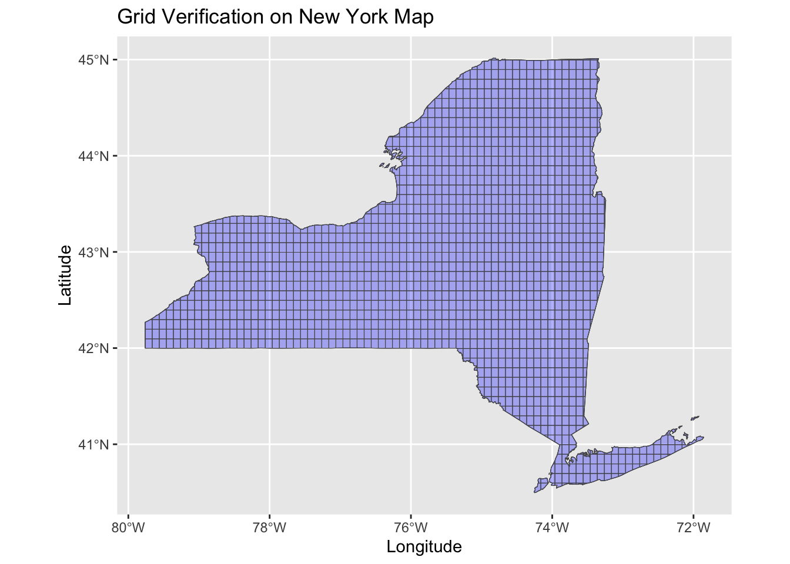
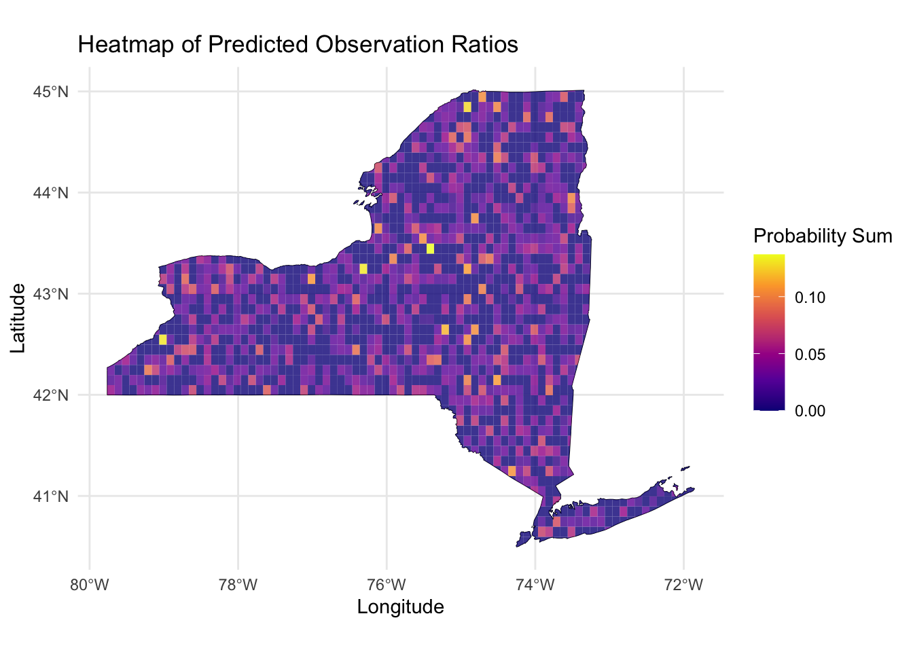
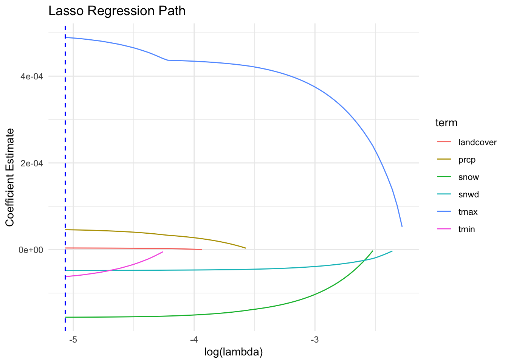
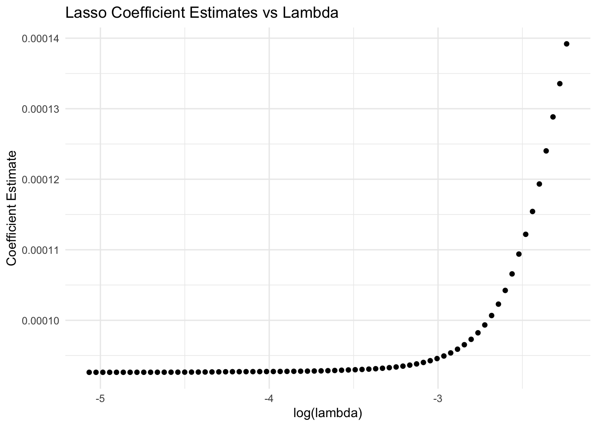
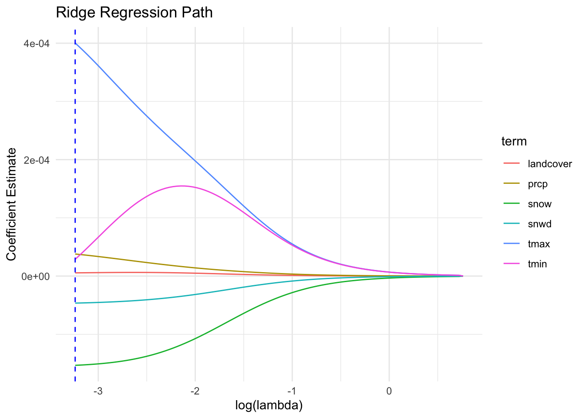
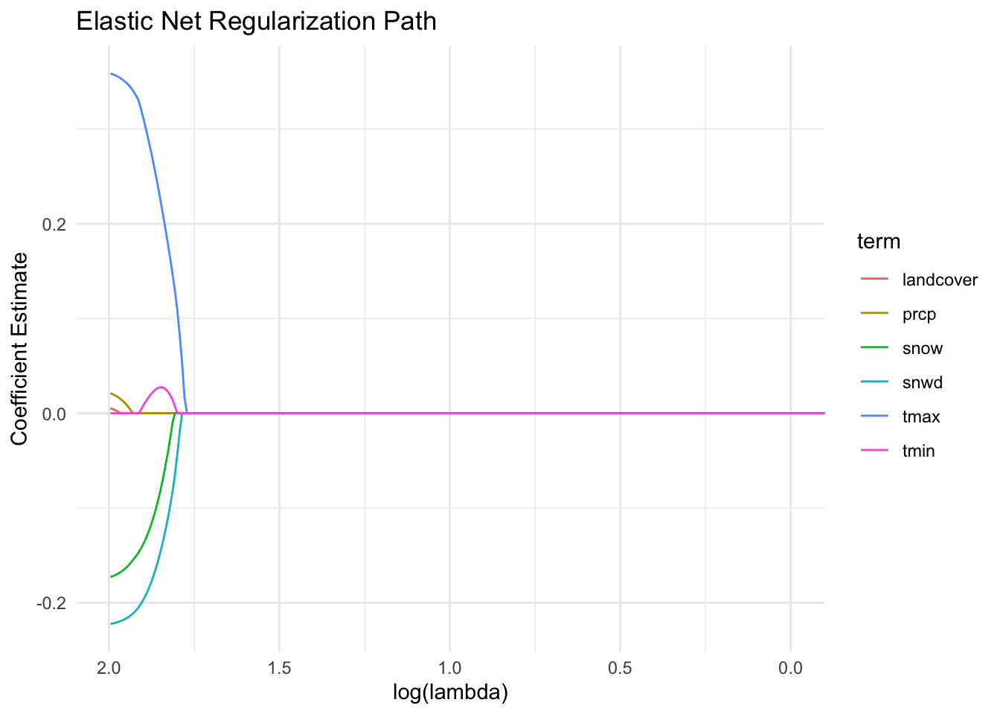

<<<<<<< HEAD
The primary goal of this section is to conduct a modeling analysis on the existing dataset. By leveraging environmental variables such as latitude, longitude, temperature, and snowfall, we aim to train regression models and ultimately generate a predictive heatmap highlighting the likelihood of observing American Woodcock in New York State.
The dataset used in this analysis includes eBird data previously collected and augmented with relevant environmental variables. To derive the observation ratio for subsequent modeling, we implemented the following steps:
Variable Grouping and Flagging: • The average temperature (t_avg) was grouped at intervals of 1°C.
• Snowfall (snow) was grouped at intervals of 5 units.
• For each grouped range, corresponding flag variables were created.
Observation Counting: • For observations within the same flag (representing similar environmental conditions), we calculated the count of American Woodcock observed.
• This count was divided by the total observations to compute the dependent variable for the regression model, obs_ratio, representing the proportion of observations under the given conditions.
weather_df <- read_csv("data/zf_with_weather_landcover.csv") |>
filter(!is.na(t_avg)) |>
filter(!is.na(landcover)) |>
mutate(t_avg_flag = as.integer((t_avg - min(t_avg, na.rm = TRUE)) / 1)) |>
mutate(snow_flag = as.integer((snow - min(snow, na.rm = TRUE)) / 5))## Rows: 1699258 Columns: 31
## ── Column specification ────────────────────────────────────────────────────────
## Delimiter: ","
## chr (10): checklist_id, state, county, usfws_code, atlas_block, locality, o...
## dbl (19): bcr_code, duration_minutes, effort_distance_km, number_observers,...
## lgl (1): all_species_reported
## date (1): observation_date
##
## ℹ Use `spec()` to retrieve the full column specification for this data.
## ℹ Specify the column types or set `show_col_types = FALSE` to quiet this message.weather_df <- weather_df |>
group_by(t_avg_flag, snow_flag) |>
mutate(
group_obs_count = n(),
total_obs_count = nrow(weather_df),
obs_ratio = group_obs_count / total_obs_count
) |>
ungroup()All predictors (tmax, tmin, prcp, snow, snwd, landcover, lon, and lat) show statistically significant contributions to the model at the 0.001 significance level (p < 0.001), indicated by their respective t-values and small p-values.
Temperature extremes (tmax and tmin) have significant but opposing effects, with higher maximum temperatures increasing the likelihood of observations and lower minimum temperatures reducing it.
Snowfall (snow) and snow depth (snwd) negatively impact observations, aligning with ecological expectations that severe winter conditions limit sightings.
lm_model = lm(obs_ratio ~ tmax + tmin + prcp + snow + snwd + landcover + lon + lat, data = weather_df)
summary(lm_model)##
## Call:
## lm(formula = obs_ratio ~ tmax + tmin + prcp + snow + snwd + landcover +
## lon + lat, data = weather_df)
##
## Residuals:
## Min 1Q Median 3Q Max
## -0.04057 -0.00433 0.00174 0.00791 0.50354
##
## Coefficients:
## Estimate Std. Error t value Pr(>|t|)
## (Intercept) 3.693e-02 5.573e-04 66.270 < 2e-16 ***
## tmax 5.119e-04 2.913e-06 175.717 < 2e-16 ***
## tmin -9.125e-05 3.236e-06 -28.199 < 2e-16 ***
## prcp 4.910e-05 1.613e-06 30.440 < 2e-16 ***
## snow -1.548e-04 9.593e-07 -161.338 < 2e-16 ***
## snwd -4.819e-05 2.424e-07 -198.792 < 2e-16 ***
## landcover 4.915e-06 5.020e-07 9.790 < 2e-16 ***
## lon 1.572e-04 8.875e-06 17.712 < 2e-16 ***
## lat -6.145e-05 1.469e-05 -4.184 2.86e-05 ***
## ---
## Signif. codes: 0 '***' 0.001 '**' 0.01 '*' 0.05 '.' 0.1 ' ' 1
##
## Residual standard error: 0.009615 on 669934 degrees of freedom
## (17023 observations deleted due to missingness)
## Multiple R-squared: 0.3359, Adjusted R-squared: 0.3359
## F-statistic: 4.236e+04 on 8 and 669934 DF, p-value: < 2.2e-16Making boundary for NY state, preparing for ploting heating map. We applied grid operations to the map of New York State, dividing it into grids to more precisely identify bird observation locations and simulate real-world conditions. After multiple adjustments, a grid size of 0.1 was selected as the optimal scale.
ny_boundary <- st_make_valid(ny_boundary)
grid_size <- 0.1
ny_grid <- st_make_grid(
ny_boundary,
cellsize = grid_size,
square = TRUE
) |>
st_as_sf()
ny_grid <- st_intersection(ny_grid, ny_boundary) |>
st_make_valid()## Warning: attribute variables are assumed to be spatially constant throughout
## all geometriesggplot() +
geom_sf(data = ny_boundary, fill = NA, color = "black") +
geom_sf(data = ny_grid, fill = "blue", alpha = 0.3) +
labs(
title = "Grid Verification on New York Map",
x = "Longitude",
y = "Latitude"
)
For continuous variables such as tmax, tmin, snow, and snwd, we fitted their distributions based on the original data and generated simulated prediction data within the 95% confidence interval. Realistic constraints were also incorporated, such as ensuring tmax is always greater than tmin, southern regions having higher temperatures than northern regions, and snowfall being lower in southern areas compared to the north.
Within each generated grid, 1,000 data points were simulated, with their latitude and longitude constrained to lie within the respective grid boundaries. Using the previously trained regression model, we predicted the observation ratio (obs_ratio) for each point and summed these values to obtain the total observation probability for each grid. Additionally, realistic landcover data were assigned to each grid based on its geographic location, further enhancing the accuracy and realism of the simulated data to align with actual conditions.
ny_grid <- ny_grid |> st_make_valid()
set.seed(42)
sampled_points <- ny_grid |>
st_sample(size = 1000, type = "random") |>
st_as_sf() |>
st_join(ny_grid)
weather_stats <- weather_df |>
summarise(
tmax_mean = mean(tmax, na.rm = TRUE),
tmax_sd = sd(tmax, na.rm = TRUE),
tmax_ci_low = quantile(tmax, probs = 0.025, na.rm = TRUE),
tmax_ci_high = quantile(tmax, probs = 0.975, na.rm = TRUE),
tmin_mean = mean(tmin, na.rm = TRUE),
tmin_sd = sd(tmin, na.rm = TRUE),
tmin_ci_low = quantile(tmin, probs = 0.025, na.rm = TRUE),
tmin_ci_high = quantile(tmin, probs = 0.975, na.rm = TRUE),
prcp_mean = mean(prcp, na.rm = TRUE),
prcp_sd = sd(prcp, na.rm = TRUE),
prcp_ci_low = quantile(prcp, probs = 0.025, na.rm = TRUE),
prcp_ci_high = quantile(prcp, probs = 0.975, na.rm = TRUE),
snow_mean = mean(snow, na.rm = TRUE),
snow_sd = sd(snow, na.rm = TRUE),
snow_ci_low = quantile(snow, probs = 0.025, na.rm = TRUE),
snow_ci_high = quantile(snow, probs = 0.975, na.rm = TRUE),
snwd_mean = mean(snwd, na.rm = TRUE),
snwd_sd = sd(snwd, na.rm = TRUE),
snwd_ci_low = quantile(snwd, probs = 0.025, na.rm = TRUE),
snwd_ci_high = quantile(snwd, probs = 0.975, na.rm = TRUE)
)
predict_data <- ny_grid |>
st_sample(size = 1000, type = "random") |>
st_as_sf() |>
st_coordinates() |>
as.data.frame() |>
rename(lon = X, lat = Y)
predict_data <- predict_data |>
mutate(
tmin = runif(n(), min = weather_stats$tmin_ci_low, max = weather_stats$tmin_ci_high),
tmax = tmin + runif(n(), min = 1, max = weather_stats$tmax_ci_high - weather_stats$tmax_ci_low),
prcp = runif(n(), min = weather_stats$prcp_ci_low, max = weather_stats$prcp_ci_high),
snow = runif(n(), min = weather_stats$snow_ci_low, max = weather_stats$snow_ci_high),
snwd = runif(n(), min = weather_stats$snwd_ci_low, max = weather_stats$snwd_ci_high),
landcover = sample(c(21, 22, 23, 24), n(), replace = TRUE)
)predict_data$longitude <- predict_data$lon
predict_data$latitude <- predict_data$lat
landcover_raw <- terra::rast("data/Annual_NLCD_LndCov_2023_CU_C1V0.tif")
predict_data_sf <- st_as_sf(predict_data, coords = c("longitude", "latitude"), crs = 4326)
if (!st_crs(predict_data_sf) == crs(landcover_raw)) {
predict_data_sf <- st_transform(predict_data_sf, crs(landcover_raw))
}
predict_data_vect <- vect(predict_data_sf)
extracted_values <- terra::extract(landcover_raw, predict_data_vect)
predict_data_sf$landcover <- extracted_values[,2]
predict_data_final = st_drop_geometry(predict_data_sf)predict_data_final$obs_ratio <- predict(lm_model, newdata = predict_data_final)grid_predictions <- st_join(ny_grid, st_as_sf(predict_data_final, coords = c("lon", "lat"), crs = st_crs(ny_grid))) |>
group_by(x) |>
summarise(
prob_sum = sum(obs_ratio, na.rm = TRUE),
prob_mean = mean(obs_ratio, na.rm = TRUE)
) |>
ungroup()The observation probabilities of the American woodcock are displayed in the form of a heatmap.
ggplot() +
geom_sf(data = ny_boundary, fill = NA, color = "black") +
geom_sf(data = grid_predictions, aes(fill = prob_sum), color = NA, alpha = 0.8) +
scale_fill_viridis_c(option = "plasma", name = "Probability Sum") +
labs(
title = "Heatmap of Predicted Observation Ratios",
x = "Longitude",
y = "Latitude"
) +
theme_minimal()
LASSO (Least Absolute Shrinkage and Selection Operator) is a regression method that performs variable selection and regularization to enhance prediction accuracy. It adds a penalty term $ _{j=1}^{p} |_j| $ to the regression model, encouraging some coefficients to shrink to exactly zero. The optimization problem can be summarized as:
\[ \frac{1}{2n} \sum_{i=1}^{n} \left( y_i - \beta_0 - \sum_{j=1}^{p} x_{ij} \beta_j \right)^2 + \lambda \sum_{j=1}^{p} |\beta_j| \]
where $ $ is the tuning parameter that controls the trade-off between model complexity and accuracy. As $ $ increases, more coefficients are penalized and shrink toward zero.
# Preparing & checking data for the lasso
sum(is.na(weather_df$obs_ratio))
sum(is.na(weather_df$tmax))
sum(is.na(weather_df$tmin))
sum(is.na(weather_df$prcp))
sum(is.na(weather_df$snow))
sum(is.na(weather_df$snwd))
sum(is.na(weather_df$landcover))
weather_df <- weather_df |> drop_na(obs_ratio, tmax, tmin, prcp, snow, snwd, landcover)
x <- model.matrix(obs_ratio ~ tmax + tmin + prcp + snow + snwd + landcover, data = weather_df)[, -1]
y <- weather_df$obs_ratio
nrow(x) == length(y) # Prepare the dataset
# Convert the predictor variables into a matrix and remove intercept
x <- model.matrix(obs_ratio ~ tmax + tmin + prcp + snow + snwd + landcover, data = weather_df)[, -1]
# Extract the response variable
y <- weather_df$obs_ratio
# Fit the Lasso regression model
lasso_fit <- glmnet(x, y, alpha = 1)
# Perform cross-validation to find the optimal lambda
cv_lasso <- cv.glmnet(x, y, alpha = 1)
best_lambda <- cv_lasso$lambda.min # The optimal lambda value
# Visualize the Lasso regression path
# Prepare data for visualization of coefficient paths
lasso_df <- broom::tidy(lasso_fit) %>%
filter(term != "(Intercept)") %>% # Remove intercept from visualization
mutate(log_lambda = log(lambda, base = 10)) # Log-transform lambda for plotting
# Plot Lasso regression path
ggplot(lasso_df, aes(x = log_lambda, y = estimate, color = term)) +
geom_line() +
geom_vline(xintercept = log(best_lambda, base = 10), linetype = "dashed", color = "blue") +
labs(
title = "Lasso Regression Path",
x = "log(lambda)",
y = "Coefficient Estimate"
) +
theme_minimal()
# Additional plot similar to the provided example
cv_lasso %>%
broom::tidy() %>%
ggplot(aes(x = log(lambda, 10), y = estimate)) +
geom_point() +
labs(
title = "Lasso Coefficient Estimates vs Lambda",
x = "log(lambda)",
y = "Coefficient Estimate"
) +
theme_minimal()
How to Read:
Key Patterns:
How to Read:
Key Patterns:
Similar to Lasso, Ridge Regression is a regression method that introduces a penalty term to reduce overfitting and improve model generalization. It adds a $ L_2 $ (not $ L_1 $) penalty term $ _{j=1}^{p} _j^2 $ to the regression model, which shrinks all coefficients proportionally but does not force them to zero. The optimization problem is given by:
\[ \frac{1}{2n} \sum_{i=1}^{n} \left( y_i - \beta_0 - \sum_{j=1}^{p} x_{ij} \beta_j \right)^2 + \lambda \sum_{j=1}^{p} \beta_j^2 \]
where $ $ is the tuning parameter controlling the regularization strength. Higher $ $ values reduce the model complexity by shrinking coefficients closer to zero, but no coefficients are entirely eliminated.
Comparison of Ridge and LASSO:
Similarities:
Differences:
# Prepare the dataset
x <- model.matrix(obs_ratio ~ tmax + tmin + prcp + snow + snwd + landcover, data = weather_df)[, -1]
y <- weather_df$obs_ratio
# Fit the Ridge regression model (alpha = 0 for Ridge)
ridge_fit <- glmnet(x, y, alpha = 0)
# Perform cross-validation to find the optimal lambda
cv_ridge <- cv.glmnet(x, y, alpha = 0)
best_lambda_ridge <- cv_ridge$lambda.min # Optimal lambda for Ridge
# Visualize Ridge regression path
ridge_df <- broom::tidy(ridge_fit) %>%
filter(term != "(Intercept)") %>%
mutate(log_lambda = log(lambda, base = 10))
ggplot(ridge_df, aes(x = log_lambda, y = estimate, color = term)) +
geom_line() +
geom_vline(xintercept = log(best_lambda_ridge, base = 10), linetype = "dashed", color = "blue") +
labs(
title = "Ridge Regression Path",
x = "log(lambda)",
y = "Coefficient Estimate"
) +
theme_minimal()
How to Read:
Key Patterns:
Elastic Net is a regularization method that combines the properties of both Ridge and LASSO regression. It adds a penalty term that is a weighted combination of $ L_1 $ (LASSO) and $ L_2 $ (Ridge) penalties. The optimization problem is formulated as:
\[ \frac{1}{2n} \sum_{i=1}^{n} \left( y_i - \beta_0 - \sum_{j=1}^{p} x_{ij} \beta_j \right)^2 + \lambda \left( \alpha \sum_{j=1}^{p} |\beta_j| + \frac{1 - \alpha}{2} \sum_{j=1}^{p} \beta_j^2 \right) \]
where:
Comparison of Elastic Net, LASSO, and Ridge:
Similarities:
Differences:
# Standardize the data to ensure all variables are on the same scale
x <- scale(x) # Standardize predictor variables
y <- scale(y) # Standardize response variable
# Fit Elastic Net model with a custom lambda range
lambda <- 10^seq(3, -2, length = 100) # Define a wide range of lambda values
elastic_fit <- glmnet(x, y, alpha = 0.5, lambda = lambda) # Fit Elastic Net model with alpha = 0.5
# Perform cross-validation to find the optimal lambda
cv_elastic <- cv.glmnet(x, y, alpha = 0.5) # Perform cross-validation
best_lambda_elastic <- cv_elastic$lambda.min # Extract the optimal lambda value
# Predict and evaluate Elastic Net with the optimal lambda
elastic_predictions <- predict(cv_elastic, s = "lambda.min", newx = x) # Predict using the optimal lambda
elastic_mse <- mean((y - elastic_predictions)^2) # Calculate mean squared error (MSE)
# Extract Elastic Net coefficients across the lambda path
elastic_path_df <- as.data.frame(as.matrix(elastic_fit$beta)) %>%
rownames_to_column(var = "term") %>% # Extract variable names from rownames
pivot_longer(-term, names_to = "lambda", values_to = "estimate") %>% # Convert wide to long format
mutate(lambda = as.numeric(gsub("s", "", lambda)), # Remove "s" prefix from lambda names
log_lambda = log(lambda, base = 10)) # Compute log(lambda)
# Plot Elastic Net regularization path
ggplot(elastic_path_df, aes(x = log_lambda, y = estimate, color = term)) +
geom_line() + # Add lines for each coefficient's path
scale_x_reverse() + # Reverse the x-axis to display lambda from large to small
labs(
title = "Elastic Net Regularization Path", # Title of the plot
x = "log(lambda)", # X-axis label
y = "Coefficient Estimate" # Y-axis label
) +
theme_minimal() # Apply a minimal theme to the plot
How to Read:
Key Patterns:
# Extract coefficients for each model and convert them to data frames
lasso_coeff_df <- as.data.frame(as.matrix(coef(cv_lasso, s = "lambda.min"))) %>%
rownames_to_column(var = "term") %>%
rename(lasso_coeff = 2)
ridge_coeff_df <- as.data.frame(as.matrix(coef(cv_ridge, s = "lambda.min"))) %>%
rownames_to_column(var = "term") %>%
rename(ridge_coeff = 2)
elastic_coeff_df <- as.data.frame(as.matrix(coef(cv_elastic, s = "lambda.min"))) %>%
rownames_to_column(var = "term") %>%
rename(elastic_net_coeff = 2)
# Merge the three data frames by the "term" column to create a comparison table
comparison_df <- lasso_coeff_df %>%
full_join(ridge_coeff_df, by = "term") %>%
full_join(elastic_coeff_df, by = "term")
# Print the comparison table
print(comparison_df)## term lasso_coeff ridge_coeff elastic_net_coeff
## 1 (Intercept) 2.276174e-02 2.359230e-02 2.204726e-12
## 2 tmax 4.893500e-04 4.002705e-04 4.031869e-01
## 3 tmin -6.200271e-05 2.877056e-05 -4.672853e-02
## 4 prcp 4.614017e-05 3.790017e-05 2.935173e-02
## 5 snow -1.556586e-04 -1.533098e-04 -1.762796e-01
## 6 snwd -4.810781e-05 -4.643720e-05 -2.276618e-01
## 7 landcover 3.960780e-06 5.503963e-06 8.052730e-03# Display the comparison table in a nicely formatted way (optional)
comparison_df %>%
knitr::kable()| term | lasso_coeff | ridge_coeff | elastic_net_coeff |
|---|---|---|---|
| (Intercept) | 0.0227617 | 0.0235923 | 0.0000000 |
| tmax | 0.0004894 | 0.0004003 | 0.4031869 |
| tmin | -0.0000620 | 0.0000288 | -0.0467285 |
| prcp | 0.0000461 | 0.0000379 | 0.0293517 |
| snow | -0.0001557 | -0.0001533 | -0.1762796 |
| snwd | -0.0000481 | -0.0000464 | -0.2276618 |
| landcover | 0.0000040 | 0.0000055 | 0.0080527 |
From the previous table, we may summary the three optimal models suggested by each algorithms:
Key Observations:
Conclusion:
predict_data_opt <- predict_data_final |> select(-landcover)
predict_data_opt$obs_ratio <- predict(lm_model, newdata = predict_data_final)grid_predictions_final <- st_join(ny_grid, st_as_sf(predict_data_opt, coords = c("lon", "lat"), crs = st_crs(ny_grid))) |>
group_by(x) |>
summarise(
prob_sum = sum(obs_ratio, na.rm = TRUE),
prob_mean = mean(obs_ratio, na.rm = TRUE)
) |>
ungroup()ggplot() +
geom_sf(data = ny_boundary, fill = NA, color = "black") +
geom_sf(data = grid_predictions_final, aes(fill = prob_sum), color = NA, alpha = 0.8) +
scale_fill_viridis_c(option = "plasma", name = "Probability Sum") +
labs(
title = "Heatmap of Predicted Observation Ratios",
x = "Longitude",
y = "Latitude"
) +
theme_minimal()